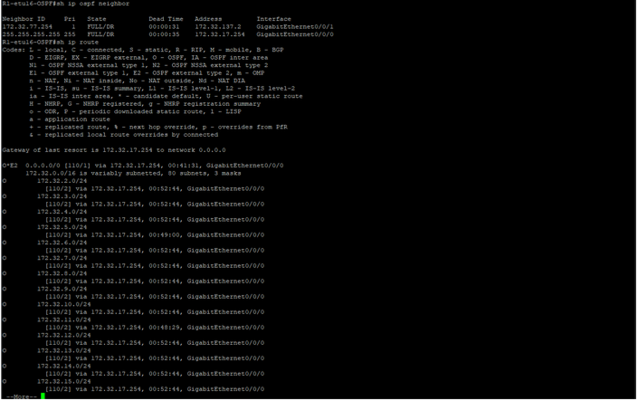
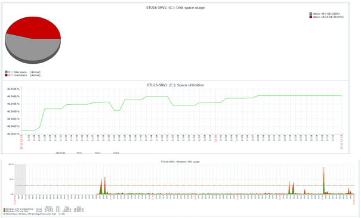
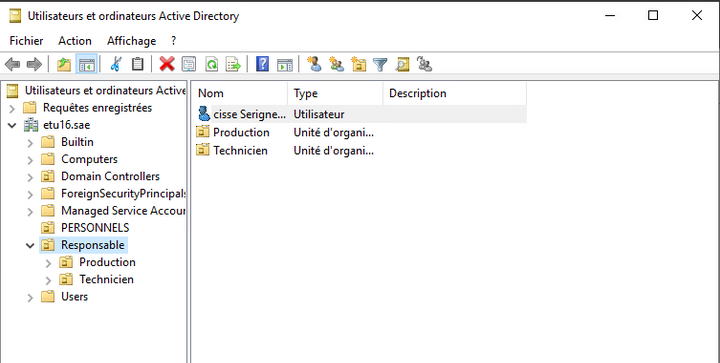
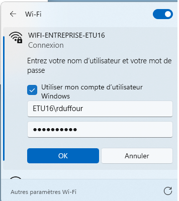

Concevoir un réseau informatique complet
Introduction : Ce projet consistait à déployer une infrastructure réseau complète et sécurisée pour "l'Entreprise X". Il m'a demandé de croiser des compétences en routage, en gestion de domaine, en virtualisation et en sécurité d'accès.
🎯 Apprentissages Critiques :
-
Compétence RT1 : Administrer les réseaux
• AC21.01 : Configurer et dépanner le routage dynamique
• AC21.03 : Déployer des postes clients et des solutions virtualisées
• AC21.04 : Déployer des services réseaux avancés -
Compétence RT2 : Connecter les entreprises
• AC22.05 : Capacité à questionner un cahier des charges R&T -
Compétence RT3 : Créer des outils informatiques
• AC23.05 : Accéder à un ensemble de données depuis une application et/ou un site web -
Compétence ROM1 : Infrastructures opérateurs
• AC24.02ROM : Virtualiser des services réseaux
1. Description du projet
Après une analyse critique du cahier des charges initial de l'entreprise (AC22.05), j'ai segmenté le réseau en VLANs sécurisés inter-connectés via le protocole de routage OSPF (AC21.01). L'infrastructure repose sur un environnement virtualisé (AC24.02ROM), hébergeant un annuaire Active Directory pour gérer centralement les postes clients (AC21.03). Le point d'orgue du projet a été le déploiement d'un réseau Wi-Fi avec portail captif authentifié via RADIUS (AC21.04), le développement d'un serveur web extrayant des données (AC23.05), et la mise sous surveillance globale avec Zabbix.
2. Présentation et justification des résultats
Les tests de connectivité démontrent que le routage converge et que les environnements virtuels communiquent parfaitement. L'authentification Wi-Fi et les postes clients s'appuient avec succès sur la base d'utilisateurs centralisée de l'AD.

Preuve 1 : Table de routage démontrant l'apprentissage des routes via OSPF.

Preuve 2 : Tableau de bord Zabbix affichant la disponibilité des hôtes du réseau.

Preuve 3 : Répartition des comptes utilisateurs dans l'annuaire Active Directory en fonction de leur groupe.

Preuve 4 : la liaison entre la borne Wi-Fi et mon serveur RADIUS est totalement opérationnelle.
3. Conclusion & Analyse Réflexive
📊 Auto-évaluation :
Les 6 apprentissages critiques ciblés sont validés. Je suis en mesure de concevoir une architecture virtualisée complexe, de questionner les besoins du client, d'intégrer des postes utilisateurs et d'y adosser des services web et d'authentification avancés.
🧠 Analyse Réflexive :
Difficultés & Résolutions : Le couplage entre le portail captif, le serveur RADIUS (NPS) et l'Active Directory a été laborieux au niveau de la gestion des certificats et de l'interrogation de la base de données. J'ai dû documenter chaque étape pour comprendre la chaîne de confiance requise par les protocoles.
Recul sur mes apprentissages : Ce projet m'a prouvé que maîtriser le réseau de niveau 2/3 ne suffit pas ; il faut savoir y intégrer les couches de virtualisation et les systèmes d'information (Microsoft/Linux) de manière cohérente pour répondre précisément à un cahier des charges.